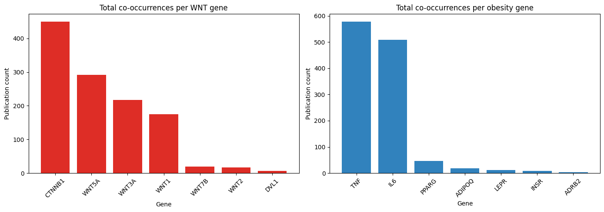
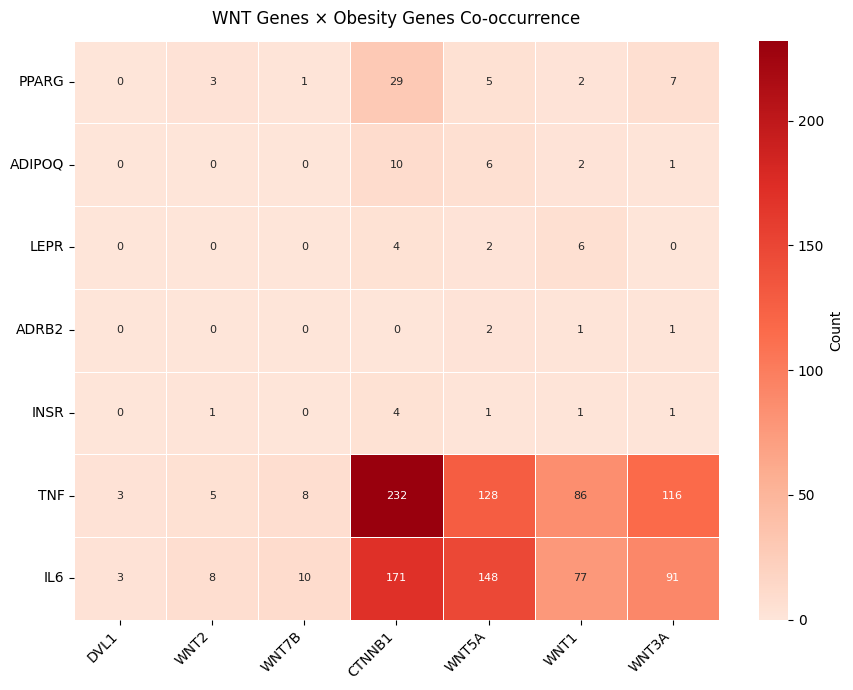

PubMatrix — WNT signalling × obesity genes¶
Mirrors the worked example from the PubMatrixR vignette.
List A (WNT genes): WNT1, WNT2, WNT3A, WNT5A, WNT7B, CTNNB1, DVL1
List B (obesity genes): LEPR, ADIPOQ, PPARG, TNF, IL6, ADRB2, INSR
Reference: Becker et al. (2003) BMC Bioinformatics 4:61.
import sys
sys.path.insert(0, '..')
import matplotlib.pyplot as plt
import pandas as pd
from pubmatrix import pubmatrix, plot_pubmatrix_heatmap
Define gene lists¶
wnt_genes = ["WNT1", "WNT2", "WNT3A", "WNT5A", "WNT7B", "CTNNB1", "DVL1"]
obesity_genes = ["LEPR", "ADIPOQ", "PPARG", "TNF", "IL6", "ADRB2", "INSR"]
Run PubMatrix query¶
This makes 7 × 7 = 49 queries to PubMed. Set api_key if you have one.
result = pubmatrix(
A=wnt_genes,
B=obesity_genes,
database="pubmed",
# api_key="YOUR_KEY_HERE",
)
result
Querying NCBI: 0%| | 0/49 [00:00<?, ?query/s]
Querying NCBI: 2%|▏ | 1/49 [00:00<00:36, 1.31query/s]
Querying NCBI: 4%|▍ | 2/49 [00:01<00:36, 1.29query/s]
Querying NCBI: 6%|▌ | 3/49 [00:02<00:31, 1.44query/s]
Querying NCBI: 8%|▊ | 4/49 [00:02<00:33, 1.34query/s]
Querying NCBI: 10%|█ | 5/49 [00:03<00:30, 1.44query/s]
Querying NCBI: 12%|█▏ | 6/49 [00:04<00:31, 1.38query/s]
Querying NCBI: 14%|█▍ | 7/49 [00:04<00:28, 1.47query/s]
Querying NCBI: 16%|█▋ | 8/49 [00:05<00:26, 1.53query/s]
Querying NCBI: 18%|█▊ | 9/49 [00:06<00:25, 1.58query/s]
Querying NCBI: 20%|██ | 10/49 [00:06<00:24, 1.61query/s]
Querying NCBI: 22%|██▏ | 11/49 [00:07<00:23, 1.63query/s]
Querying NCBI: 24%|██▍ | 12/49 [00:08<00:24, 1.51query/s]
Querying NCBI: 27%|██▋ | 13/49 [00:08<00:24, 1.49query/s]
Querying NCBI: 29%|██▊ | 14/49 [00:09<00:22, 1.56query/s]
Querying NCBI: 31%|███ | 15/49 [00:10<00:22, 1.49query/s]
Querying NCBI: 33%|███▎ | 16/49 [00:10<00:22, 1.44query/s]
Querying NCBI: 35%|███▍ | 17/49 [00:11<00:21, 1.52query/s]
Querying NCBI: 37%|███▋ | 18/49 [00:12<00:19, 1.56query/s]
Querying NCBI: 39%|███▉ | 19/49 [00:12<00:18, 1.59query/s]
Querying NCBI: 41%|████ | 20/49 [00:13<00:18, 1.55query/s]
Querying NCBI: 43%|████▎ | 21/49 [00:14<00:23, 1.18query/s]
Querying NCBI: 45%|████▍ | 22/49 [00:15<00:20, 1.29query/s]
Querying NCBI: 47%|████▋ | 23/49 [00:15<00:18, 1.38query/s]
Querying NCBI: 49%|████▉ | 24/49 [00:16<00:17, 1.46query/s]
Querying NCBI: 51%|█████ | 25/49 [00:17<00:15, 1.52query/s]
Querying NCBI: 53%|█████▎ | 26/49 [00:17<00:14, 1.56query/s]
Querying NCBI: 55%|█████▌ | 27/49 [00:18<00:14, 1.56query/s]
Querying NCBI: 57%|█████▋ | 28/49 [00:19<00:14, 1.49query/s]
Querying NCBI: 59%|█████▉ | 29/49 [00:19<00:13, 1.44query/s]
Querying NCBI: 61%|██████ | 30/49 [00:20<00:12, 1.51query/s]
Querying NCBI: 63%|██████▎ | 31/49 [00:20<00:11, 1.55query/s]
Querying NCBI: 65%|██████▌ | 32/49 [00:21<00:11, 1.47query/s]
Querying NCBI: 67%|██████▋ | 33/49 [00:22<00:10, 1.53query/s]
Querying NCBI: 69%|██████▉ | 34/49 [00:22<00:09, 1.57query/s]
Querying NCBI: 71%|███████▏ | 35/49 [00:23<00:08, 1.58query/s]
Querying NCBI: 73%|███████▎ | 36/49 [00:24<00:08, 1.60query/s]
Querying NCBI: 76%|███████▌ | 37/49 [00:24<00:07, 1.63query/s]
Querying NCBI: 78%|███████▊ | 38/49 [00:25<00:06, 1.65query/s]
Querying NCBI: 80%|███████▉ | 39/49 [00:25<00:06, 1.65query/s]
Querying NCBI: 82%|████████▏ | 40/49 [00:26<00:05, 1.65query/s]
Querying NCBI: 84%|████████▎ | 41/49 [00:27<00:04, 1.66query/s]
Querying NCBI: 86%|████████▌ | 42/49 [00:27<00:04, 1.66query/s]
Querying NCBI: 88%|████████▊ | 43/49 [00:28<00:03, 1.68query/s]
Querying NCBI: 90%|████████▉ | 44/49 [00:28<00:02, 1.67query/s]
Querying NCBI: 92%|█████████▏| 45/49 [00:29<00:02, 1.67query/s]
Querying NCBI: 94%|█████████▍| 46/49 [00:30<00:01, 1.68query/s]
Querying NCBI: 96%|█████████▌| 47/49 [00:30<00:01, 1.67query/s]
Querying NCBI: 98%|█████████▊| 48/49 [00:31<00:00, 1.67query/s]
Querying NCBI: 100%|██████████| 49/49 [00:31<00:00, 1.60query/s]
Querying NCBI: 100%|██████████| 49/49 [00:31<00:00, 1.53query/s]
| WNT1 | WNT2 | WNT3A | WNT5A | WNT7B | CTNNB1 | DVL1 | |
|---|---|---|---|---|---|---|---|
| LEPR | 6 | 0 | 0 | 2 | 0 | 4 | 0 |
| ADIPOQ | 2 | 0 | 1 | 6 | 0 | 10 | 0 |
| PPARG | 2 | 3 | 7 | 5 | 1 | 29 | 0 |
| TNF | 86 | 5 | 116 | 128 | 8 | 232 | 3 |
| IL6 | 77 | 8 | 91 | 148 | 10 | 171 | 3 |
| ADRB2 | 1 | 0 | 1 | 2 | 0 | 0 | 0 |
| INSR | 1 | 1 | 1 | 1 | 0 | 4 | 0 |
Publication counts per gene (bar plot)¶
fig, axes = plt.subplots(1, 2, figsize=(14, 5))
# Total publications per WNT gene (column sums)
col_totals = result.sum(axis=0).sort_values(ascending=False)
axes[0].bar(col_totals.index, col_totals.values, color="#de2d26")
axes[0].set_title("Total co-occurrences per WNT gene")
axes[0].set_xlabel("Gene")
axes[0].set_ylabel("Publication count")
axes[0].tick_params(axis="x", rotation=45)
# Total publications per obesity gene (row sums)
row_totals = result.sum(axis=1).sort_values(ascending=False)
axes[1].bar(row_totals.index, row_totals.values, color="#3182bd")
axes[1].set_title("Total co-occurrences per obesity gene")
axes[1].set_xlabel("Gene")
axes[1].set_ylabel("Publication count")
axes[1].tick_params(axis="x", rotation=45)
plt.tight_layout()
plt.show()

Heatmap with clustering¶
plot_pubmatrix_heatmap(
result,
title="WNT Genes × Obesity Genes Co-occurrence",
cluster_rows=True,
cluster_cols=True,
show_numbers=True,
width=9,
height=7,
)
(<Figure size 900x700 with 2 Axes>,
<Axes: title={'center': 'WNT Genes × Obesity Genes Co-occurrence'}>)

Export results¶
Saved wnt_obesity_matrix.csv